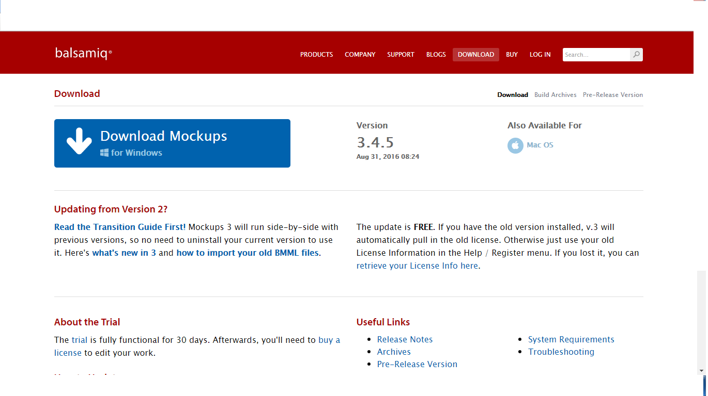

Tampilan webset tersebut terlalu simpel, user tidak bisa memilih versi atau format os yang akan di download, seperti: windows, linux.
jika website ini di tambahkan pilihan version seperti wireframe dibawah maka user akan lebih mudah mencari apa yang di butuhkan untuk penginstalan pada komputer dengan begitu akan ada banyak yang mendownload aplikasi tersebut.
download wireframenya disini